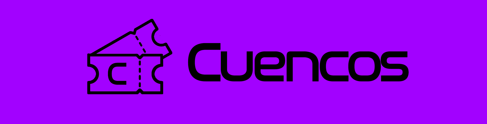

Design Thinking
1. Capa
- Título do Projeto: Cuencos
- Nome da Equipe: Beto Cuenca (Guilherme Reis, Anderson Lima e Bernardo Casanovas)
- Data: 2025.1
- Logo da Empresa/Organização: 
2. Introdução
-
Contexto do Projeto:
A organização de eventos, compras de ingressos e o relacionamento entre clientes e organizadores ainda apresentam dificuldades de experiência, acessibilidade e controle. Há uma demanda crescente por plataformas intuitivas, responsivas e com recursos integrados para esses públicos. No mercado de Eventos Universitários, há uma falta de investimento de tempo nesses aspectos -
Objetivo:
Criar um website que atenda tanto ao público geral quanto a organizadores, oferecendo uma experiência fluida para compra, gerenciamento e promoção de eventos. -
Público-Alvo:
- Clientes interessados em eventos universitários
-
Organizadores que buscam uma plataforma para publicar, vender e gerenciar seus eventos.
-
Escopo:
- Desenvolvimento de duas interfaces: uma para o cliente e outra para o organizador.
- Funcionalidades incluem: login/registro, compras, QR Code, perfil e dashboard de estatísticas.
- Interface responsiva e interativa.
3. Fases do Design Thinking
3.1. Empatia
- Pesquisa:
- Observação de plataformas concorrentes.
- Entrevistas com usuários que frequentam eventos e organizadores de pequeno porte (atléticas).
-
Análise de feedbacks em websites similares.
-
Insights:
- Usuários desejam praticidade e clareza no processo de compra.
- Organizadores querem relatórios e controle detalhado das vendas.
- A maioria acessa dos usuários acessa via dispositivos móveis e organizadores por pc.
-
Interface confusa e pouco responsiva gera abandono da plataforma.
-
Personas:
- Jean, 20 anos, universitário – Usa o celular para comprar ingressos e prefere apps rápidos.
- Carla, 21 anos, organizadora de eventos de atlética – precisa de uma plataforma para divulgar eventos e acompanhar vendas em tempo real.
3.2. Definição
-
Problema Central:
Como podemos criar uma plataforma de eventos que seja eficiente, intuitiva e útil tanto para clientes quanto para organizadores? -
Pontos de Vista (POV):
- João precisa de um jeito rápido e confiável de comprar ingressos.
- Carla precisa de uma forma prática de criar eventos, acompanhar estatísticas e ter acesso fácil às ferramentas de gestão.
3.3. Ideação
- Brainstorming:
3.4. Prototipagem
-
Descrição do Protótipo:
Protótipo digital interativo desenvolvido em ferramentas como Figma e posteriormente implementado em HTML, CSS e JS. -
Materiais Utilizados:
- Alta fidelidade: Figma e Photoshop
-
Baixa fidelidade: Linguagem .wsd
-
Testes Realizados:
- Testes em dispositivos móveis e desktop
- Feedbacks coletados em formulários online
3.5. Teste
- Feedback dos Usuários:
-
A definir
-
Ajustes Realizados:
-
A definir
-
Resultados Finais:
- A definir
4. Conclusão
- Resultados Obtidos: O que foi alcançado com o projeto.
- Próximos Passos: O que ainda precisa ser feito ou implementado.
- Aprendizados: Lições aprendidas durante o processo.